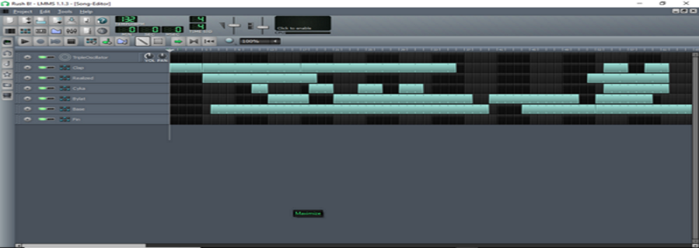
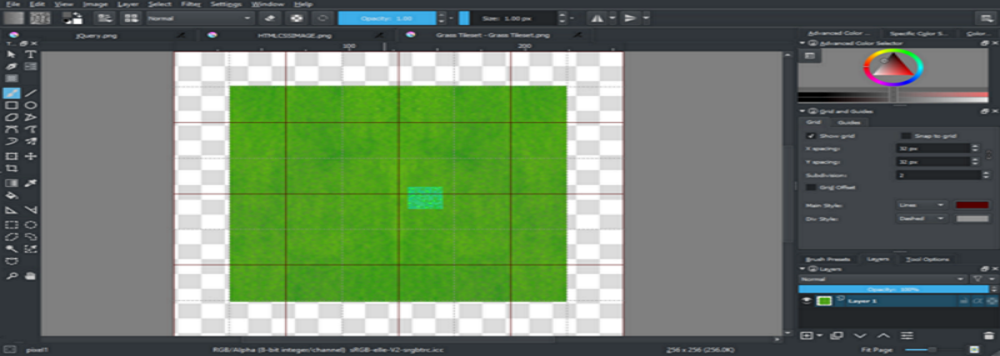
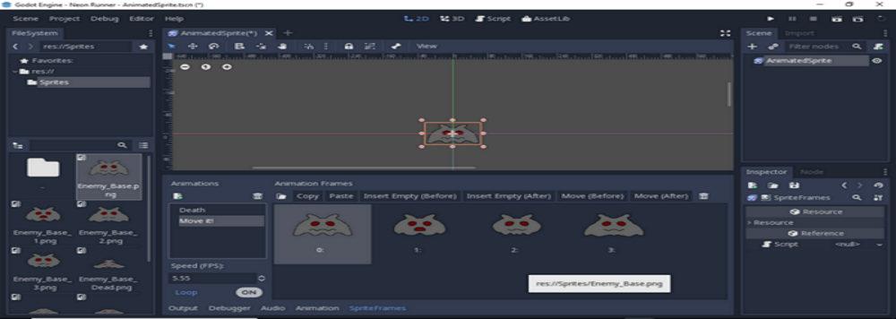
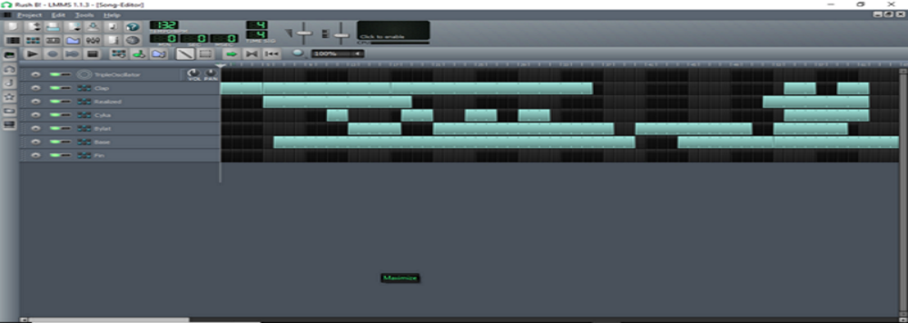
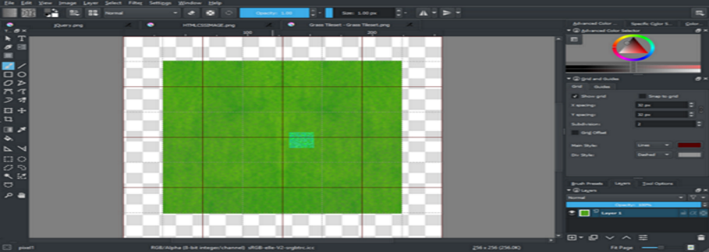
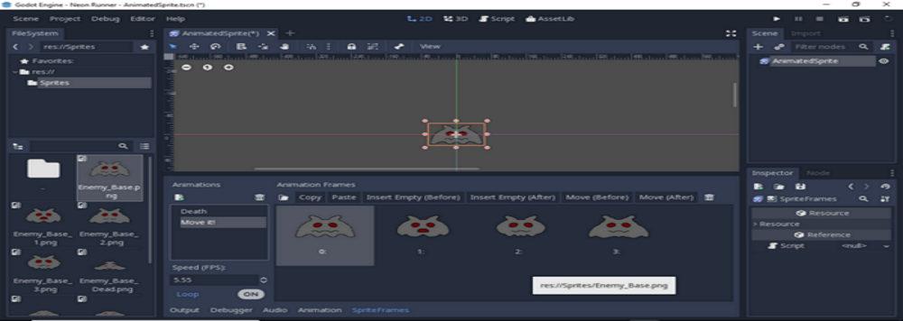
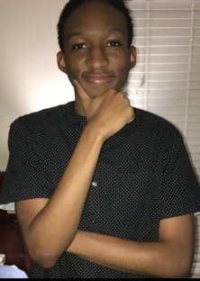

The Offical portfolio of Jaleen Bowens-Kelly
Providing services in these areas:
 





About
Since I was little, I always enjoyed working with technology. Growing up, I learned a lot about working with technology and it's implementation to modern society. My mission is to become a freelance programmer and independent game developer. Enjoy Philosophy, Programming, Video Games and Technology in general. I am proficient in these programming languages: HTML5, CSS, JQuery, PHP, and Python. While I do prefer Front-End development, I am more than willing to learn Back-End. I am also proficient in photo editing and graphic design. I plan on freelancing my services out to the world, as I have a passion to travel a lot, but is more than willing to work with a client for extended periods of time.
Experience
I primarily learned from self-teaching myself how to program, using websites like Khan Academy, Youtube, and Sololearn to understand programming. I personally use Brackets and VS Studio to create/edit most of my code that deals with Web Design. My artwork is often 2d pixel art, but I working on branching to 3d modeling.
Gaming Visionary
I've been creating simple games since 2014 and have learned a lot about what it means to be a game designer, artist, musician, and programmer. I value the creative freedom and technical prowess that creating games bring. I believe that no other medium can tell a story like a good game and this industry will pivotal going into the future. My philosophy is to create games all about passion and creativity that would go on to inspire many, like many of the games of my past. I see gaming as a form of art and should be respected as such by all other mediums of entertainment. I am always ready to learn more about what it means to make a great game and the hard effort that it really is.
Programming Marvel
Along with creating games, I also spent a lot of time learning programming. My aim is to become relevant in the future of technology. I want to be involved in the evolution of humanity and technology. I am excited to learn more about what it means to be a programmer and software developer.
Artisan's Pride
I always appreciate the nuance that goes into creating art in any medium. I understand the amount of time and dedication it takes to become a great artist, and I want to be considered one of those great artists. I always working on improving my ability to create and expand my ability to create art.

Programming Showcase
Python Exponential Population Growth
A python function that allows user input that continuesly increase the population base on player input. Initial 1.0 version.
LinkArt Showcase
Music Showcase
Games Showcase
My Official Blog
A personal Blog dedicated to talking about programming, videogames, and more! It's a great way to learn more about me and what I enjoy doing. Made in Wordpress, it will contain some insight on how I opperate.
Link to my Blog